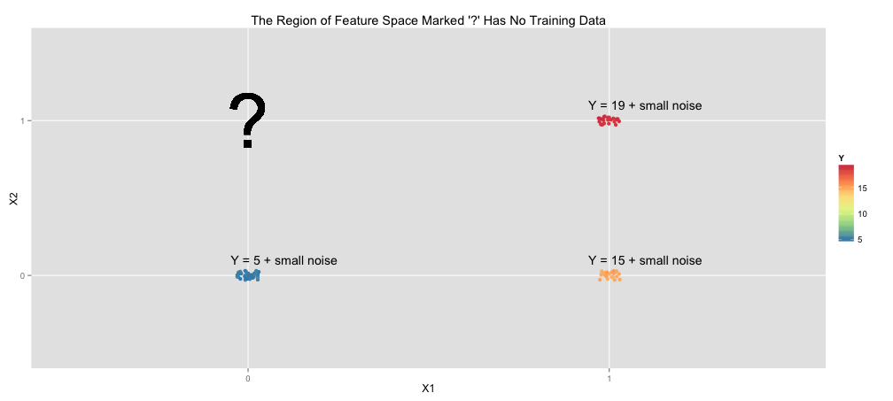
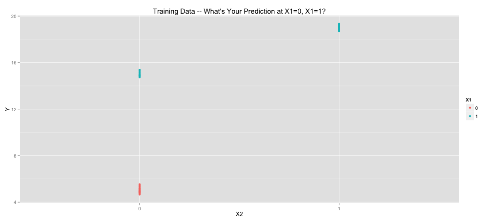
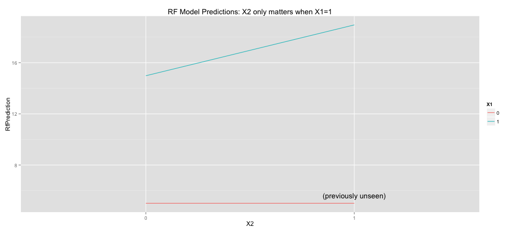
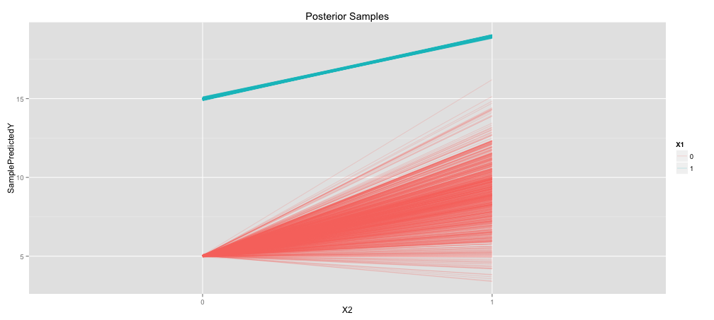
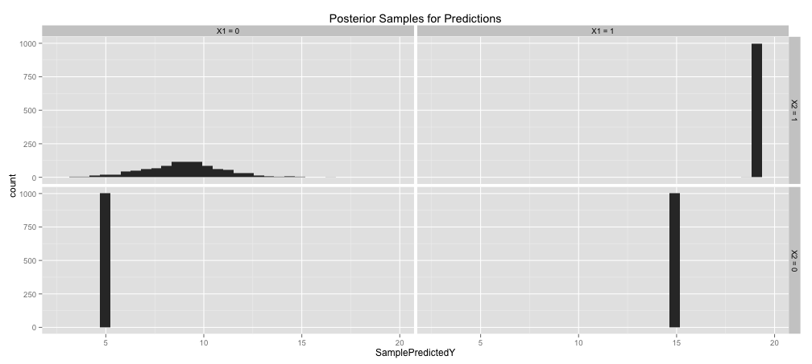
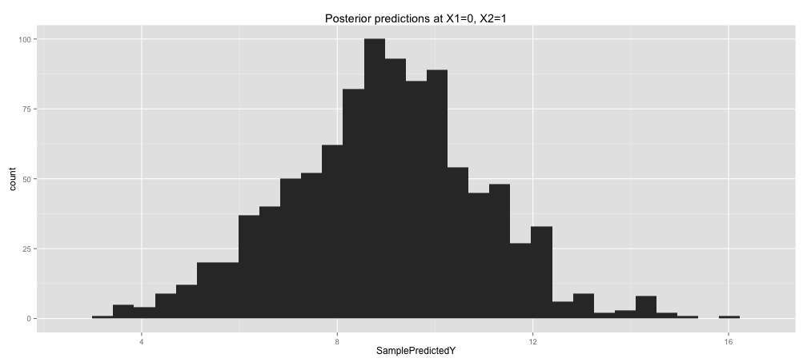
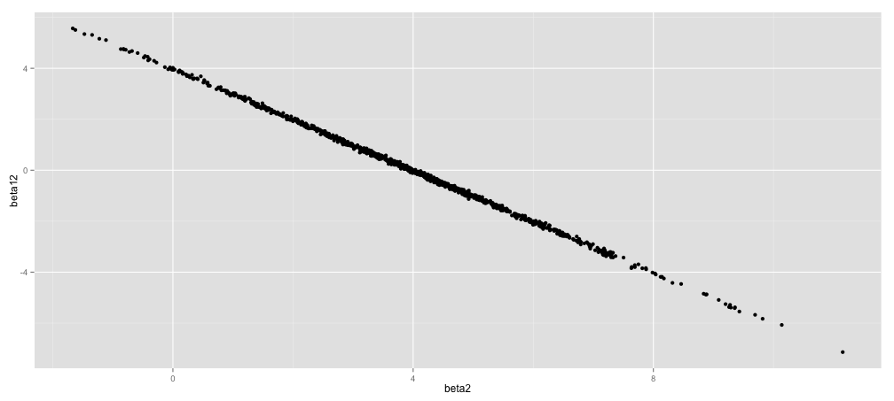
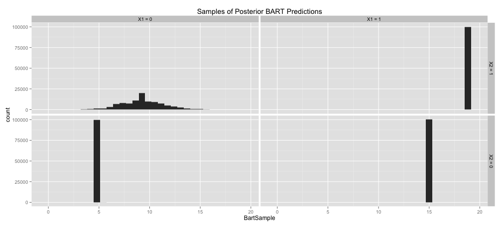

Training Data

|
X1
|
X2
|
Y
|
N Training Rows:
|
|
0
|
0
|
Y = 5 + small noise
|
52
|
|
1
|
0
|
Y = 15 + small noise
|
23
|
|
1
|
1
|
Y = 19 + small noise
|
25
|
|
0
|
1
|
?
|
0
|
Another view of the training data:

A Linear Model
lmFit <- lm(Y ~ X1 + X2, data = train)
Model: \[\mathbb{E}[Y] = \beta_0 + \beta_1 X_1 + \beta_2 X_2\]
You find:
\[\mathbb{E}[Y] = 5 + 10 X_1 + 4 X_2.\]
Random Forest (and decision trees)
rfFit <- randomForest(Y ~ X1 + X2, data = train, mtry=2)

## X1 X2 Unseen LmPrediction RfPrediction
## 1 0 0 FALSE 5.013 5.012
## 2 1 0 FALSE 14.980 14.980
## 3 0 1 TRUE 8.988 5.012
## 4 1 1 FALSE 18.955 18.956
Linear Regression with Regularized Interaction Term
\[Y = \beta_0 + \beta_1 X_1 + \beta_2 X_2 + \beta_{12} X_1 X_2 + N(0,\sigma)\]
Too many free parameters - need a prior:
\[\beta_{12} \sim N(0,2)\]
library(rstan)
stanModel1 <- "
data {
int<lower=0> N;
vector[N] X1;
vector[N] X2;
vector[N] Y;
}
parameters {
real beta0;
real beta1;
real beta2;
real beta12;
real<lower=0> sigma;
}
model {
beta12 ~ normal(0, 2);
Y ~ normal(beta0 + beta1*X1 + beta2*X2 + beta12*X1 .* X2, sigma);
}
"
Posterior Samples Instead of One Prediction

Posterior Distribution of Interaction Parameter

More Directly Look at Distribution of Predictions

When \(\beta_{12}\) is High, \(\beta_2\) is Low (and vice versa)

What if we were to regularize the main effects as well as the interaction term?
BART
Each BART sample is a sum-of-trees model, e.g.:
library(bartMachine)
nIterAfterBurnIn <- 100000
bartFit <- bartMachine(train[c("X1","X2")], train$Y,
num_burn_in=50000,
num_trees=10,
num_iterations_after_burn_in=nIterAfterBurnIn)
BART Predictions are Appropriately Uncertain

Advantages of BART:
- “machine learning style model” (see distinctions in Dan’s talk: automatically find interactions, etc.)
- can be uncertain where appropriate
- Note: “bootstrapped” confidence intervals would not help the random forest